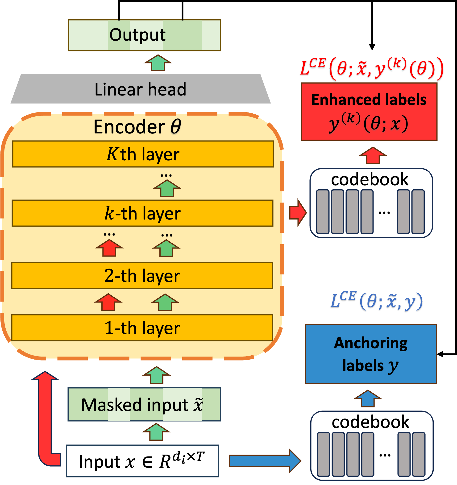

BiRQ reuses intermediate model representations to generate enhanced pseudo-labels and combines them with raw-input anchors in a bilevel training framework.
Let a speech model improve its own learning targets
A target without a transcript
Speech is continuous. A self-supervised learner can hide part of a recording and predict a discrete label for that part, but somebody still has to define those labels. A random quantizer creates them cheaply. A representation learned by another encoder can make them more informative, at the cost of maintaining that encoder and its training pipeline.

Intermediate encoder features supply the enhanced labels. A parallel random quantizer maps the raw input to anchoring labels. Both supervise the same masked-input prediction model.
Original paper sourceUse representations already being learned
BiRQ takes intermediate representations from the speech model itself and discretizes them with a random-projection quantizer. This gives the model a route to richer targets without requiring a separate external label encoder. The labels and representations can improve within the same training process.
Reuse internal features
Take intermediate representations from the speech model and randomly quantize them.
Keep an input-based anchor
Retain pseudo-labels derived from raw audio features alongside the enhanced targets.
Train the interaction
Use the bilevel formulation and differentiable Gumbel-softmax selection for end-to-end learning.
An evolving target needs an anchor
When a learner also helps construct its targets, the target can move as the learner changes. BiRQ includes labels obtained directly from the raw input as an anchor. This stable source complements the enhanced labels produced from intermediate representations.
Optimization connects the two roles
The paper formulates the interaction as a bilevel learning problem. Differentiable Gumbel-softmax selection supports end-to-end training of the label-selection mechanism. The exact losses and update rules are in Section 3; the page’s diagram focuses on what each component contributes.
Evaluate with speech recognition
The reported experiments use word error rate after downstream fine-tuning. In the 155M Conformer LibriSpeech comparison, BiRQ reports 5.0% test-clean and 12.6% test-other WER, compared with 6.8% and 19.6% for BEST-RQ. The AMI experiment reports improvements in its own setting. Those numbers describe the specified model, data, and decoding configurations.
Intermediate features can carry more useful information than raw-input quantization, but they change during training. The raw-input branch supplies an anchor while the model participates in constructing its enhanced targets.
Explore the idea
Follow the two target sources
The intermediate branch includes random-projection quantization. These controls explain the design; they do not alter a training run or predict word error rate.
Evaluate the targets through speech recognition
Table 2, C2 setting: 10-layer 155M Conformer, 960h LibriSpeech self-supervised pretraining, then 100h labeled fine-tuning. The comparison below is test-other WER; test-clean is 6.8% for BEST-RQ and 5.0% for BiRQ.
test-other word error rate (%)
Reported downstream recognition errors; lower is better.
Table 3 tests a different setting: a 275M Conformer pretrained on 5k hours of YODAS and fine-tuned on 150h of AMI. WER is 18.4% versus 16.3% on ami-ihm and 37.2% versus 34.0% on ami-sdm for BEST-RQ and BiRQ.
Table 2 · LibriSpeech recognition results in the paper
How to read this result
The reported WER comparisons belong to their stated architecture, pretraining data, fine-tuning data, and decoding setup. The target-source diagram explains the design and does not measure the effect of changing its controls.
Inside the method
Equation 8 minimizes the enhanced-label loss while requiring the anchoring-label loss to stay within of its optimum. Both losses average masked-frame cross-entropy over the training data. Section 3 defines the label generators, losses, and training updates.
- Parameters of the acoustic encoder.
- Enhanced-label cross-entropy objective.
- Anchoring-label cross-entropy objective.
- Allowed lower-level suboptimality in the anchoring objective.
- WER
- Word error rate after downstream recognition fine-tuning.
The technical idea
The target generator shares the learner’s representations
BiRQ uses a random-projection quantizer on intermediate features. That reuses a representation already being trained instead of requiring a separate external label encoder.
An anchor and an enhanced target have distinct roles
Raw-input labels provide an input-based reference. Enhanced labels use the evolving learned features. The method combines the two sources; selecting a branch in this page’s diagram only explains its role.
Selection connects the discrete and trainable components
The method uses differentiable Gumbel-softmax selection within its bilevel training framework. Section 3 gives the losses and update scheme; the diagrams here summarize the information flow.
Assumptions and guarantee
BiRQ is a model and training framework. Its central technical content is the bilevel formulation, pseudo-label generation, anchoring, and differentiable selection. See Section 3 for the actual losses and update scheme.
Section 3 · Equation 8 and Algorithm 1 in the paperHow this connects to the other papers
BiRQ uses bilevel structure to connect a learner with its target construction. PBGD-Free investigates a separate algorithmic question: when flatness can reduce the cost of a nested optimization problem.
Cite this work
@inproceedings{jiang2026birq,
title = {BiRQ: Bi-Level Self-Labeling Random Quantization for Self-Supervised Speech Recognition},
author = {Liuyuan Jiang and Xiaodong Cui and Brian Kingsbury and Tianyi Chen and Lisha Chen},
booktitle = {ICASSP 2026},
year = {2026},
url = {https://arxiv.org/abs/2509.15430}
}